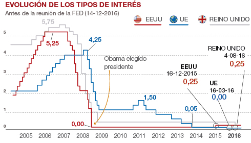
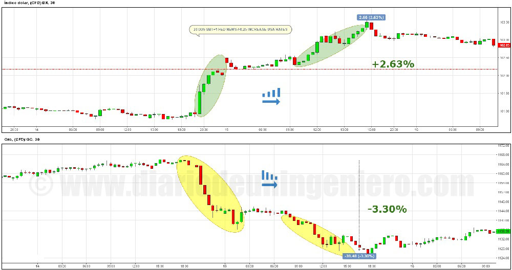

En diciembre del año 2015 contemplamos la primera subida de tipos de USA en 10 años. Fue una subida mínima pero llevaba un mensaje muy potente en su interior, el del fin de un ciclo.
En el gráfico de la derecha se pude ver la evolución de los tipos de las 3 divisas más fuertes del mundo, el dólar, el euro y la libra.
Se aprecia como el euro siempre va por detrás de los cambios de la divisa estadounidense, como 2 años atrasadas.
Ya que el mercado europeo el último siglo ha estado subordinado a lo que pasa en Estados Unidos, siempre a la par.
Por eso aunque la medida no nos afecta siempre se puede ver hacia donde iremos nosotros en cuestión de tiempo.
Debido al crecimiento de la economía estadounidense era casi obligatorio esa subida, incluso se pudo hacer antes pero por precaución se pospuso.
Venía de la mano de la predicción de dos a tres subidas este año.
Sin embargo sólo se ha realizado una subida este año debido a la inestabilidad global con todo lo sucedido en el Brexit sobre todo y la incertidumbre de las elecciones americanas.
Una subida prematura sin saber el resultado del Brexit podría haber disparado el dólar contra el euro de una manera desproporcionada y haber aumentado la volatilidad de los mercados.
Esto no es lo que le gusta al mercado así que se pospuso.
Así pues en diciembre de este año Yellen, la presidenta de la FED, anuncio el incremento de otro 0.25% en los tipos y remarco que el año que viene habrá 3 subidas.
Estas 3 subidas no eran esperadas por el mercado y no se había descontado lo que hizo subir el dólar todavía más.
También se notó en el mercado del metal dorado y de la plata, bajando su valor entorno a un 4% en apenas 2 días.
En la gráfica podemos ver la contraposición del índice dolar con respecto al oro en el momento del anuncio.

Las más damnificadas fueron las grandes compañías mineras de oro como Barrick Gold, Kinross Co, GoldCorp, Alamos GLD, u otras más pequeñas que llegaron a perder un 10% en dos días.
Los bancos en cambio reaccionaron al alza. En los grandes índices estos cambios apenas se notaron ya que estaba descontado desde hace tiempo.
Pronostico que el año que viene habrá tres subidas y una de ellas, posiblemente la última, sea de medio punto con lo que se subirá un punto en total en 2017.
© 2016 - All Rights Reserved - Diseñada por Sergio López Martínez
![[Valid RSS]](https://www.feedvalidator.org/images/valid-rss-rogers.png "Validate my RSS feed")